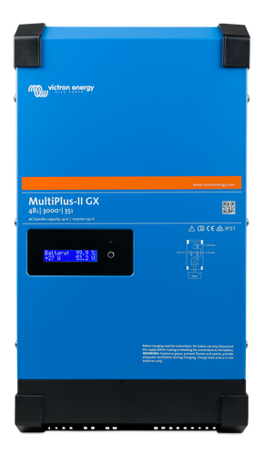

Komplette Bestellliste, Verkabelungsplan und offene Punkte für Elektriker-Abnahme
Standort: Etzdorf im Rosental · Stand: 27.04.2026 · Auslegung: Off-Grid 48 V / 230 V · 1-phasig 16 A
Zur Durchsicht durch Opa und finalen Abnahme durch Elektriker
Eine zweite, vollständig vom Bestandssystem unabhängige Off-Grid-Stromversorgung für das Gartenhaus. Das bestehende 12V/700W/1,4kWh-System bleibt für den Garten erhalten, das neue 48V-System versorgt:
Gartenhaus — ca. 10 Steckdosen, Beleuchtung, Mini-Kühlschrank, Starlink, evtl. Mikrowelle, Bewegungsmelder mit LED-Leiste an der Klo-Treppe
Brunnenpumpe — wird vom alten System auf das neue umgeklemmt
Überwachungskameras (geplant) — Dauerverbrauch ca. 5–15 W pro Kamera
Heizen und Warmwasser bleiben Gas. Der Boiler und der Ofen werden über Gasflaschen betrieben. Strom wird also nur für Elektronik, kleinere Geräte und gelegentliche Spitzenlasten (Mikrowelle, Wasserkocher, Werkzeug) gebraucht. Geschätzter Tagesverbrauch: 1–2 kWh, in einer aktiven Buchungswoche bis 3–4 kWh.
Warum diese Auslegung? Mit 2,76 kWp Solar und 3,5 kWh Akku hat das System auch bei mehreren Schlechtwettertagen Reserven. Der Wechselrichter (3000 W Dauer / 5500 W kurzzeitig) reicht problemlos für 16 A Hauptsicherung. Wichtigster Designtreiber: niedriger Eigenverbrauch des Wechselrichters — das Gartenhaus steht oft leer, da darf der Wechselrichter nicht mehr Strom ziehen als die Verbraucher.
2. Systemarchitektur und Verkabelungsplan
+---- 6× Solarmodul 460 Wp (Aufdach Schuppen Einfahrt) ----+
| |
| DC: 2 Strings à 3 Module in Reihe |
| H1Z2Z2-K 6 mm² + MC4-Stecker |
v v
+-----+-----+ +-----+
| DC-Trenn- | | |
| schalter | | |
+-----+-----+ +-----+
|
v
+------------+------------+
| Victron SmartSolar | <-- Schaltschrank im VORDEREN Schuppen
| MPPT 150/45 (Laderegler)| (abschließbar, isoliert, frostfrei)
+------------+------------+
|
| DC 48V (Kupfer 25 mm²)
v
+------------+------------+ +-----------------------+
| Pylontech US3000C 3.5kWh| | Mega-Sicherung 125 A |
| LiFePO4 Batterie |<------------>| (zwischen Akku + WR) |
+------------+------------+ +-----------------------+
|
| DC 48V (Kupfer 35 mm² + Sicherung)
v
+------------+------------+
| Victron MultiPlus II | <-- Wandelt 48V DC -> 230V AC
| 48/3000/35 | Standby ~11 W (super niedrig!)
+------------+------------+
|
| 230V AC (NYY-J 5×2,5 mm² als Luftleitung, ~20 m)
v
+------------+------------+
| mittlerer Schuppen | <-- bestehende alte 12V-Anlage bleibt
| (Geräteschuppen) | hier ungestört, eigenes 5×-Erdkabel
| | wird übernommen
+------------+------------+
|
| 230V AC (Bestand: NYY-J 5× Erdkabel)
v
+------------+------------+
| Gartenhaus |
| Hauptverteilung: |
| - FI 25 A / 30 mA |
| - LS B16 (Steckd.) |
| - LS B10 (Licht) |
| - 10× Steckdosen |
| - Bew.-Melder Klo |
+-------------------------+
Trick mit dem 5-adrigen Erdkabel: Vom Geräteschuppen zum Gartenhaus liegt schon ein 5-adriges NYY-J-Erdkabel. Wir nutzen davon nur eine Phase + N + PE für das neue System (3 Adern). Die zwei freien Adern bleiben für mögliche zukünftige Anwendungen reserviert oder werden parallel als zusätzliche Phase aufgelegt. Erlaubt nur, wenn beide Stromversorgungen klar getrennt und gekennzeichnet sind — das muss der Elektriker bestätigen.
3. Energiezentrale
Diese drei Komponenten bilden das Herz des Systems und stehen alle gemeinsam in einem abschließbaren, isolierten Schaltschrank im vorderen Schuppen direkt unter den Solarmodulen.
Bild
Produkt
Spezifikation
Anz.
Einzelpreis
Summe
Link

Victron MultiPlus II 48/3000/35-32PFLICHT
Inselwechselrichter mit Ladegerät, reine Sinuswelle
Dauerleistung: 2400 W (3000 VA)
Spitzenleistung: 5500 W Standby: ~11 W (entscheidend!)
Wirkungsgrad: 95 %
Eingang: 48 V DC
Ausgang: 230 V AC / 50 Hz
Maße: 50 × 30 × 22 cm
Gewicht: 19 kg
5 Jahre Garantie
Max. PV-Leistung: 2600 W (48 V Akku)
Max. PV-Spannung (Voc): 150 V
Max. Ladestrom: 45 A
Bluetooth integriert (App)
Wirkungsgrad: 98 %
Maße: 25 × 19 × 10 cm
Sparvariante (zum Vergleich): Statt Pylontech eine EPEVER 48V 100Ah (5,12 kWh) für ~700 € einsetzen. Hat sogar mehr Kapazität, ist aber bei der Kommunikation mit Victron etwas frickeliger (Profil muss manuell konfiguriert werden, kein nativer CAN-Support). Spart ~400 €. Empfehlung: bei Pylontech bleiben — das ist seit Jahren der bewährte Standard für Victron-Off-Grid-Anlagen.
4. Solarmodule und Aufständerung
Bild
Produkt
Spezifikation
Anz.
Einzelpreis
Summe
Link
☀️
JA Solar JAM54D40-LB 460 WpEMPFOHLEN
Glas-Glas, bifazial, schwarzer Rahmen
Leistung: 460 Wp (STC)
Voc: ~46 V, Vmp: ~38 V
Isc: ~13 A, Imp: ~12 A
Maße: ~176 × 113 × 3 cm
Gewicht: ~22 kg
Glas-Glas, bifazial
Wirkungsgrad: ~22 %
25 Jahre Leistungsgarantie
6
75,90 €
455,40 €
tepto.de (Abholung empfohlen — Versand frisst die Ersparnis)
—
Modul-Aufständerung Holz-SelbstbauEIGENBAU
30°-Winkel-Gestell auf Schuppendach
Druckimprägnierte Kantholz 7×7 cm + 4×6 cm
Schwerlastwinkel verzinkt
Edelstahlschrauben + Stockschrauben
Sturmsicherung (Spanngurte oder Stahlseil)
Modulklemmen Mitte/Außen Alu (12 + 4 Stück)
Material aus dem Bauhaus / Toom
1
—
~ 120 €
—
—
Modulklemmen-Set AluminiumEMPFOHLEN
Falls keine professionelle Schiene gebaut wird
Mittelklemmen 35 mm + Endklemmen 35 mm
Set für 6 Module (12+4 Stück)
Zur Befestigung an Holz-Querbalken
String-Auslegung: 6 Module werden in 2 parallelen Strings à 3 Module in Reihe verschaltet.
Vmp pro String: 3 × 38 V = 114 V (im MPPT-Range 60–145 V) ✓
Voc pro String bei –10°C: 3 × 51 V = 153 V — knapp am 150 V Limit, daher MPPT 150/45 mit etwas Reserve. (Bei Modulen mit niedrigerem Voc kein Problem; wenn JA Solar liefert mit Voc 46 V, dann Wintermax = 138 V — sicher.)
Imp 2 Strings parallel: 2 × 12 A = 24 A — passt zu MPPT 45 A
Gesamtleistung: 6 × 460 Wp = 2760 Wp
Aufständerung kritisch: Holz-Selbstbau ist OK, ABER Sturmlast und Schneelast müssen passen. 6 Module wiegen 130 kg, bei Sturm wirken aber Hebelkräfte von mehreren hundert Kilo. Empfehlung: Konstruktion vom Opa oder Elektriker prüfen lassen, mind. 4 Auflagepunkte pro Modul, Sturmsicherung mit Spanngurten zur Schuppenwand. Schuppendach muss die Last tragen können.
Mit Original-Kommunikationskabel CAN. Manche Pylontech-Sets enthalten das schon, prüfen beim Bestellen.
1
im Akku-Set
im Pylontech-Set enthalten
Zwischensumme DC-Verkabelung
200 €
6. AC-Verkabelung
Drei Abschnitte:
Vorderer Schuppen → mittlerer Schuppen (~20 m, NEU als Luftleitung)
Mittlerer Schuppen → Gartenhaus (~40 m, BESTAND als 5-adriges Erdkabel — wir nutzen davon nur 1 Phase + N + PE)
Im Gartenhaus (~50 m für 10 Steckdosen + 1 Lichtkreis)
Produkt
Spezifikation / Verwendung
Anz.
Preis
Link
NYY-J 5×2,5 mm² ErdkabelPFLICHT
Vom vorderen zum mittleren Schuppen als Freileitung über Spanndraht (~20 m + 5 m Reserve). 5 Adern, weil das vorhandene Erdkabel auch 5-adrig ist und so der Übergang sauber bleibt. Nur L1, N und PE werden genutzt.
Im Gartenhaus für Steckdosenkreis(e). 50 m lt. deiner Schätzung. Reicht für 1 Stromkreis Steckdosen — wenn 2 getrennte Kreise erwünscht (Steckdosen + Licht), dann 75 m bestellen.
Falls Licht und Steckdosen getrennt werden sollen (sinnvoll wegen separater B10-Sicherung). 25 m reichen für Beleuchtung + Bewegungsmelder + LED-Leiste.
Querschnitts-Check (Spannungsabfall bei 16 A Volllast):
NYY 5×2,5: 20 m Strecke → ~3 % Drop. Akzeptabel für Reserve-Phase.
Bestand 5×2,5 (Annahme): 40 m → ~6 % Drop bei 16 A. Grenzwertig (max 4 % erlaubt nach VDE). → Daher Empfehlung: im Gartenhaus mit B13 statt B16 absichern, oder den Wechselrichter elektronisch auf 13 A (3 kW) begrenzen — der Victron kann das per App. Reicht für alle geplanten Verbraucher.
NYM 3×2,5 im Haus: 30 m → ~3 %. Passt.
Frage an Elektriker: Welcher Querschnitt ist im bestehenden 5-adrigen Erdkabel? Wenn 4 mm² oder mehr: B16 problemlos OK. Wenn 2,5 mm²: Begrenzung auf 13 A wegen Spannungsabfall.
7. Hausverteilung, FI/LS, Steckdosen
Schaltschrank Energiezentrale (vorderer Schuppen)
Produkt
Spezifikation
Anz.
Preis
Link
Wandverteiler IP65 Aufputz, 24 ModuleEMPFOHLEN
Für die DC-Sicherungen, Klemmen und ggf. AC-Hauptschalter im Schuppen. Falls eigener Holzschrank gebaut wird, ist nur ein Reihenklemmen-Set nötig.
Wichtig: Erdung ist für ein Off-Grid-System mit FI zwingend erforderlich. Ohne Erder funktioniert der FI nicht zuverlässig — bei Fehlerstrom muss er abschalten können.
Da kein Fundamenterder vorhanden ist, gibt es drei realistische Optionen:
Option A: Tiefenerder (Kreuzerder)
Empfehlung. Verzinkter Stahlerder, 1,5 m oder besser 2 × 1,5 m gestoßen, in feuchtes Erdreich neben dem Schuppen / Gartenhaus.
Messung des Erdwiderstands nötig (Elektriker mit Erdungsmessgerät), Ziel <100 Ω, besser <50 Ω.
Option B: Im Brunnenrohr
Metallband oder Edelstahl-Erder durch den Plastikschlauch des Brunnens bis ans Grundwasser ablassen. Nur wenn das technisch sauber geht. Vorteil: kontakt mit Grundwasser = sehr niedriger Erdwiderstand.
Edelstahlband V4A 30×3,5 mm: ~50 €
Erdungsschelle + Anschlusskabel
Risiko: das Band scheuert am Plastikschlauch oder Schlauch wird beschädigt. Mit dem Elektriker durchsprechen.
Option C wäre noch ein Banderder im Erdreich (mind. 50 cm tief, mind. 25 m lang) — das ist aber Aufwand mit dem Bagger und nur sinnvoll wenn parallel Erdkabel-Trasse gegraben wird.
Schaltschrank-Standort vorbereiten — abschließbarer, isolierter, frostfreier Raum/Schrank im vorderen Schuppen. Ausreichend Platz: ~80 × 60 × 40 cm.
Solarmodule montieren — Holz-Aufständerung bauen, Module festschrauben, Kabel mit MC4-Steckern verbinden. Module noch NICHT ans MPPT anschließen (sonst stehen sie unter Spannung).
DC-Trennschalter setzen — zwischen Module und MPPT. Auf "AUS" lassen.
Komponenten im Schaltschrank verkabeln — Wechselrichter, MPPT, Akku-Halterung. Akku noch NICHT anklemmen!
Übergang zum 5-adrigen Bestandskabel — Im mittleren Schuppen sauber auf Reihenklemmen verbinden, beschriften ("Off-Grid System Haus — getrennt vom 12V-Garten").
Hausverteilung montieren — Verteilerkasten anschrauben, FI + LS einbauen, NYM-Kabel verlegen, Steckdosen montieren.
Victron MultiPlus 48/3000 älteres Modell, Standby ~15 W
Growatt SPF 5000ES 5 kW, integrierter MPPT, Standby ~30–50 W
MPPT-Charger
SmartSolar 150/45 (extra)
SmartSolar 100/30 (extra)
im Wechselrichter integriert
Akku
Pylontech US3000C 3,5 kWh, Plug-and-Play, 1100 €
EPEVER 48V 100Ah 5,12 kWh, manuelle Konfig, 700 €
EPEVER 48V 100Ah 5,12 kWh, manuelle Konfig, 700 €
Solarmodule
6 × 460 Wp = 2,76 kWp
5 × 460 Wp = 2,30 kWp
5 × 460 Wp = 2,30 kWp
Aufständerung
120 € (Bauhaus-Material)
60 € (Holz vom Hof)
60 € (Holz vom Hof)
Material gesamt
~ 3.830 €
~ 2.880 €
~ 2.360 €
Elektriker-Abnahme
~ 400 €
~ 350 €
~ 350 €
GESAMT
~ 4.230 €
~ 3.230 €
~ 2.710 €
Empfehlung: Variante B (~3.230 €)
Trifft das Budget-Ziel von ~3.500 € sauber, behält den niedrigen Standby-Verbrauch (Victron, ~15 W), gewinnt aber durch den EPEVER-Akku 1,6 kWh mehr Speicherkapazität als Variante A (5,12 statt 3,5 kWh). 5 Module statt 6 reichen problemlos — bei dem geringen Verbrauchsprofil (Mini-Kühlschrank, Starlink, Kameras, gelegentliche Mikrowelle) sind 2,3 kWp im Sommer-Schnitt 9–11 kWh/Tag — mehr als das Achtfache des Tagesbedarfs.
Die ~970 € Ersparnis gegenüber Variante A geht auf Kosten von:
Älteres Wechselrichter-Modell (aber gleichwertig in Funktion)
Variante C — die Schmerzgrenze (~2.710 €):
Growatt SPF 5000ES ist günstig und kann viel — der einzige Nachteil ist der hohe Standby-Verbrauch von ~30–50 W. Bei oft leerstehendem Gartenhaus = ~1 kWh/Tag, das der Akku nur fürs Stehen verliert. Lösung: Hauptschalter bei Abwesenheit umlegen. Das geht bei euch — ihr seid sowieso nicht jeden Tag da. Das wird zur Disziplinfrage.
Für ein Setup, das durchläuft (Starlink immer an, Kameras immer scharf), ist Variante B besser. Wenn ihr die Disziplin habt das System bei längerer Abwesenheit auszuschalten, spart Variante C nochmal 520 € — auch eine valide Option.
Verworfene Sparhebel (zur Transparenz):
4 statt 5/6 Module: Spart 75 €, aber im Winter wirklich knapp. Nicht empfohlen bei einem System mit Dauer-Verbrauchern.
Kein FI-Schalter / kleinere Sicherungen: Sparpotenzial ~30 €. Verstoß gegen VDE, Versicherung weg, fällt in der Abnahme durch. Nicht möglich.
Gebrauchte Komponenten von Kleinanzeigen: Wechselrichter ~−400 €, Akku ~−500 € möglich. Aber: kein Service-Anspruch, oft kein Datenblatt, Akku-SOH unklar. Hohes Ausfallrisiko in den ersten Jahren. Nicht empfohlen für die Hauptkomponenten.
Cerbo GX weglassen: War nicht im Plan A drin — Smartphone-App (VictronConnect) reicht.
11. Offene Fragen für Opa und Elektriker
Frage 1 — Querschnitt des bestehenden 5-adrigen Erdkabels?
Das Bestandskabel vom Geräteschuppen zum Gartenhaus ist 5-adrig — wir wissen aber nicht, ob 1,5 / 2,5 / 4 / 6 mm². Davon hängt ab, ob wir mit B16 oder B13 absichern und wie viel Leistung wirklich übertragen werden kann.
Aktion: Kabelmantel im Schuppen aufschneiden und Adernquerschnitt messen oder vom Aufdruck ablesen.
Frage 2 — Kann der Schuppen die Schnee-/Sturmlast tragen?
6 Module à 22 kg = 132 kg Eigengewicht plus mögliche Schneelast. Bei Sturm wirken Hebelkräfte. Das Dach des vorderen Schuppens muss das aushalten.
Aktion: Dachkonstruktion mit Opa beurteilen. Falls Bedenken: Holz-Aufständerung mit Spanngurten zur Schuppenwand zusätzlich abspannen, Module nur auf den Dachstützen, nicht in der Mitte.
Frage 3 — Erdung Option A oder B?
Tiefenerder neben dem Schuppen einschlagen (sauber, Standard) oder Edelstahlband durch den Brunnenrohr ablassen (besserer Erdwiderstand, aber Risiko Schlauchbeschädigung)?
Aktion: Mit Elektriker beraten. Empfehlung: Tiefenerder, weil das Brunnenrisiko unkalkulierbar ist.
Frage 4 — Trennung der zwei Anlagen sauber dokumentiert?
Das alte 12V-System (Garten) und das neue 48V-System (Haus + Pumpe) müssen klar gekennzeichnet sein. Im mittleren Schuppen, wo das alte System steht, müssen die Klemmen für das durchgehende 5-adrige Erdkabel beschriftet werden — sonst legt jemand mal versehentlich beide Systeme parallel.
Frage 5 — Pumpe: 230V einphasig vorhanden, oder muss sie ausgetauscht werden?
Die Brunnenpumpe lief bisher am 12V-System. War das eine 12V-DC-Pumpe oder eine 230V-AC-Pumpe (mit Wechselrichter dazwischen)? Wenn DC, brauchen wir eine neue 230V-Pumpe.
Aktion: Typenschild der Pumpe ablesen.
Frage 6 — Mikrowelle vs. Wechselrichter-Spitzenleistung?
Eine Mikrowelle braucht im Anlauf ~2000 W. Der Victron MultiPlus II 48/3000 schafft das locker (5500 W Spitze, 2400 W Dauer). Aber wenn parallel andere Verbraucher laufen, kann es eng werden. Wir empfehlen: Mikrowelle alleine, kein Wasserkocher gleichzeitig.
Aktion: Familie informieren.
Frage 7 — Kabelweg vom vorderen Schuppen zum mittleren Schuppen: Höhe der Luftleitung?
VDE schreibt für Freileitungen über zugänglichen Bereich Mindesthöhen vor (typ. 4 m über Wegen, 3 m sonst). Strecke ist nur ~20 m, aber wir brauchen Befestigungspunkte (Bäume? Pfosten setzen?).
Aktion: Trasse vor Ort abgehen, Befestigungspunkte planen.
11 W Standby × 24 h × 30 d = ~8 kWh/Monat = ~10 % der monatlichen Erzeugung im Winter. Im Sommer egal, im Winter spürbar. Alternative: Wechselrichter komplett ausschalten wenn das Haus leer steht (Hauptschalter im Schuppen umlegen).
Aktion: Verhalten besprechen — was muss durchlaufen (Starlink? Kameras?), was kann offline gehen.
12. Was nicht im Setup ist (zur Klarstellung)
Backup-Generator — Falls jemals zentrales 230V-Notstrom gewünscht ist (z.B. längere Schlechtwetterphase im Winter), könnte später ein Honda EU22i oder ähnliches dazukommen. Nicht jetzt nötig.
Akku-Erweiterung — Pylontech US3000C ist parallel-fähig, eine zweite Einheit kann später dazu (3,5 → 7 kWh).
Modul-Erweiterung — Der MPPT 150/45 schafft maximal 2600 W, also wären noch ~0–1 Modul möglich. Für mehr braucht es einen zweiten MPPT.
WLAN/Monitoring — Der Victron hat Bluetooth + per VRM-Cloud auch Online-Zugriff (kostenfrei). Falls Cerbo GX dazugekauft wird (~280 €), gibt's Touchscreen + lokales Webinterface. Aktuell nicht im Budget, kann später ergänzt werden.
Überspannungsschutz Typ 2 — Bei Off-Grid weniger wichtig als bei Netzanschluss, aber empfehlenswert wenn Blitz-Risiko hoch (offene Lage). ~50 € extra. Mit Elektriker abstimmen.
Kameras + Starlink-Anschluss — Hardware nicht in dieser Liste enthalten, da separat geplant.